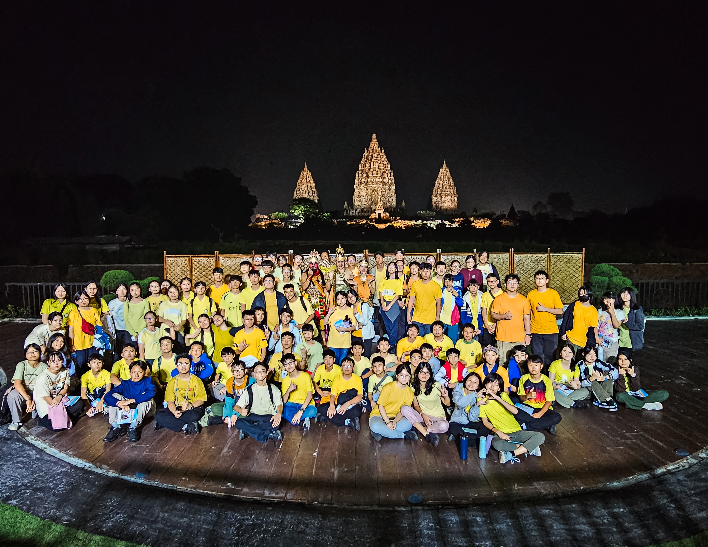

Perjalanan saya dimulai saat saya sampai di Bandara Soekarno Hatta untuk menaiki pesawat menuju ke Yogyakarta. Saat kami sampai di Yogyakarta, kami langsung menuju Desa Wisata Pentingsari untuk melakukan live-in selama 4 hari dan 3 malam. Saat live-in, kami melakukan berbagai macam aktifitas, seperti melihat UMKM warga desa, melakukan lava tour, dan masih banyak lagi.
Setelah kami melakukan live-in, kami menuju ke berbagai museum seperti Museum Ullen Sentalu, Museum Gunung Merapi, Candi Prambanan dan mengakhiri hari keempat di Yogyakarta dengan menikmati tontonan Sendratari Ramayana.
Di hari kelima, kami mengunjungi Batik Winotosastro untuk membuat batik dengan metode tempel. Setelah itu, kami mengunjungi Keraton Yogyakarta, Gereja Hati Kudus Yesus Ganjuran, dan mengakhiri hari dengan makan malam di jalan khas Yogyakarta, Malioboro.
Di hari keenam, kami memulai perjalanan kami di pagi hari untuk menuju ke kota Solo dan mengunjungi Institut Seni Solo untuk mendengarkan program-program mereka dan mencari inspirasi mengenai pekerjaan di masa depan kami. Setelah mengunjungi ISI Solo, kemi menuju Rumah Atsiri Solo untuk makan siang, mempelajari cara pembuatan pewangi-pewangi seperti essential oil, parfum, mist, dan lain-lain.
Di hari terakhir, kami menuju Museum Manusia Purba Sangiran dan Pabrik Gula De Tjolomadoe untuk mempelajari cara makhluk hidup berevolusi dan melihat proses pembuatan gula. Setelah mengunjungi kedua tempat itu, kami mengakhiri perjalanan kami menuju Bandara Adi Soemarmo Solo untuk kembali ke Bandara Soekarno Hatta, Jakarta.
